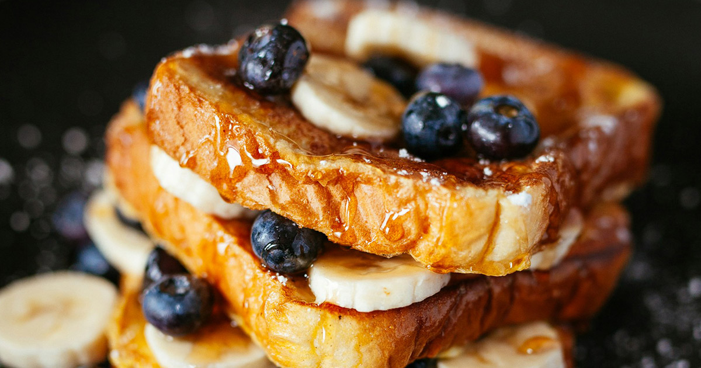

Description
What's better than fluffy french toast? How aboout french toast with bananas and blueberry!? This is a classic that's easy to make and sure to be a favorite.
Ingredients
- 2/3 cup milk
- 2 large eggs
- salt to taste
- 1 teaspoon vanilla extract (optional)
- 1/4 teaspoon ground cinnamon (optional)
- 6 thick slices of bread
- 1 tablespoon unsalted butter
- 1/4 teaspoon icing sugar (optional)
- small handful of blueberries
- 1 banana cut into 1/4" slices
Steps
- Whisk eggs, milk, salt, vanilla, and cinnamon togehter in a bowl.
- Heat a large skillet over medium-high heat. Drop a small amount of butter into the pan
- Coat the slices of bread in the mixture, before dropping them on the skillet.
- Cook for about 3-4 minutes each side, until golden brown.
- Serve with a dollop of butter, blueberries, and banana slices. Drizzle the icing sugar lightly over top.
- Enjoy with maple syrup, honey, or on their own.
Home